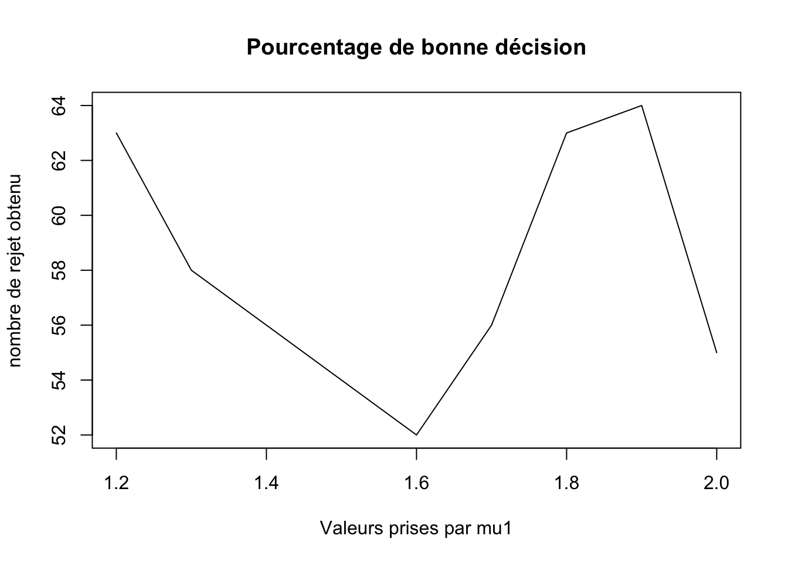

Sous les hypothèses \(H_0\): \(\mu=\mu_0\) et \(H_1\): \(\mu=\mu_1\), \(\alpha\) correspond à la probabilité de l’Erreur de première espèce appellé aussi seuil ou encore niveau de signification du test. Cette valeur représente la probabilité de rejeter l’hypothèse \(h_0\) à tord. Elle s’exprime mathématiquement par : \(\mathbb{P}[\text{choisir } H_1 | H_0 \text{vraie}]\)
Afin de trouver la statistique de test, on applique le test de Nieman-Pearson : \(\Lambda(x_1,x_2,...,x_n) = \frac{L(x_1,...,x_n;\mu_1)}{L(x_1,...,x_n;\mu_0)}\) et on en déduira la zone de rejet : \(W=\{(x_1,...,x_n)|\Lambda(x_1,x_2,...,x_n) =\frac{L(x_1,...,x_n;\mu_1)}{L(x_1,...,x_n;\mu_0)} > K_{\alpha}\) avec \(K_{\alpha}\) choisi tel que \(\mathbb{P}[\Lambda > K_{\alpha}]=\alpha\) On obtient \(\Lambda_n= \frac{\sqrt{n}(\bar{X_n}-\mu_0)}{S_n}\) Sous l’hypothèse \(H_0\), \(\Lambda_n\) suit une loi de Student à \(n-1\) degré de liberté : \(T_{n-1}\). Ainsi, \(P_{H0}(W) = P_{H0}(\Lambda_n >K_\alpha)=1-F_{T_{n-1}}(K_\alpha)=\alpha\) où \(F_{T_{n-1}}\) est la fonction de répartition de \(T_{n-1}\). On en déduit que \(K_{\alpha}=F_{T_{n-1}}^{-1}(1-\alpha)\) Finalement, on rejette l’hypothèse \(H_0\) si \(\bar{X_n} > \mu_0 + \frac{S_n}{\sqrt{n}}F_{T_{n-1}}(1-\alpha)\).
La rêgle de décision ici est de choisir entre \(S_n\leadsto \mathcal{N}(\mu_0,?)\) ou \(\leadsto \mathcal{N}(\mu_1,?)\)
#alpha : risque de première espèce
Delta <- function(Sn,alpha,mu0,mu1){
n<- length(Sn)
emp_Xn <- 1.0 / n *sum(Sn)
sigma <- 1.0 / (n-1) * sum((Sn - emp_Xn)**2)
lambda <- sqrt(n / sigma) * (emp_Xn - mu0)
Ka <- qt(p=1.0 - alpha, df=n-1)
return (lambda > Ka)
}
if (Delta(rnorm(20,1,sqrt(2)),0.05,1,1.5)){
print("H0 est rejeté : mu = mu1")
}else{
print("H0 n'est pas rejeté : mu = mu0")
}## [1] "H0 n'est pas rejeté : mu = mu0"acc <- 0
for (i in 1:100){
if (Delta(rnorm(20,1,sqrt(2)),0.05,1,1.5)){
acc <- acc + 1
}
}
print(paste("nombre de rejet du test = ",acc,sep = ""))## [1] "nombre de rejet du test = 3"On remarque que le nombre de rejet varie accès peu et qu’il vaut généralement 4.
alpha_list <- c(0.2,0.1,0.05,0.01)
for (i in alpha_list){
Ka <- qt(p=1.0 - i, df=20-1)
print(Ka)
}## [1] 0.8609506
## [1] 1.327728
## [1] 1.729133
## [1] 2.539483La valeur de \(\alpha\) influe directement sur la zone de rejet du test. Ainsi si \(\alpha\) augmente \(K_{\alpha}\) va diminuer.
for(i in alpha_list){
acc <- 0
for(j in 1:100){
if(Delta(rnorm(20,1,sqrt(2)),i,1,1.5))
acc <- acc + 1
}
print(paste("alpha = ",i," nombre de rejet du test = ",acc,sep = ""))
}## [1] "alpha = 0.2 nombre de rejet du test = 17"
## [1] "alpha = 0.1 nombre de rejet du test = 9"
## [1] "alpha = 0.05 nombre de rejet du test = 4"
## [1] "alpha = 0.01 nombre de rejet du test = 2"for(i in alpha_list){
acc <- 0
for(j in 1:100){
if(Delta(rnorm(20,1.5,sqrt(2)),i,1,1.5))
acc <- acc + 1
}
print(paste("alpha = ",i," nombre de rejet du test = ",acc,sep = ""))
}## [1] "alpha = 0.2 nombre de rejet du test = 75"
## [1] "alpha = 0.1 nombre de rejet du test = 58"
## [1] "alpha = 0.05 nombre de rejet du test = 41"
## [1] "alpha = 0.01 nombre de rejet du test = 11"On remarque dans un premier que logiquement que rejeté beaucoup plus que précédemment. D’autre part, \(\alpha\) influe encore car plus \(\alpha\) est grand plus on se trompe sur le testde décision.
La puissance d’un test, notée \(\beta\), est la probabilité de rejeter \(H_0\) lorsque \(H_1\) est vraie \((\beta =\mathbb{P}[\text{choisir } H_1 | H_0 \text{vraie}]\)
Dans le cas présent, on a : \(\beta =P_{H_1}(W) = P_{H_1}(\Lambda_n >K_{\alpha})=1-F_{T_{n-1}}\frac{\sqrt{n}(\mu - \mu_0)}{S_n} + F_{T_{n-1}}^{-1}(1-\alpha)\)
mu_liste <- c(1.2,1.3,1.4,1.5,1.6,1.7,1.8,1.9,2.0)
test <- c()
for(i in mu_liste){
acc <- 0
for(j in 1:100){
if(Delta(rnorm(20,1.5,sqrt(2)),0.05,1,i))
acc <- acc +1 #nombre de mauvaise décision
}
test <- c(test,acc)
print(paste("alpha = ",i," nombre de rejet du test = ",acc,sep = ""))
}## [1] "alpha = 1.2 nombre de rejet du test = 41"
## [1] "alpha = 1.3 nombre de rejet du test = 44"
## [1] "alpha = 1.4 nombre de rejet du test = 44"
## [1] "alpha = 1.5 nombre de rejet du test = 48"
## [1] "alpha = 1.6 nombre de rejet du test = 47"
## [1] "alpha = 1.7 nombre de rejet du test = 44"
## [1] "alpha = 1.8 nombre de rejet du test = 41"
## [1] "alpha = 1.9 nombre de rejet du test = 49"
## [1] "alpha = 2 nombre de rejet du test = 37"plot(mu_liste,100 - test,xlab = "Valeurs prises par mu1",ylab = "nombre de rejet obtenu",main = "Pourcentage de bonne décision",type = "l")
t.test(rnorm(20,1,sqrt(2)),mu = 1,var.equal = FALSE)##
## One Sample t-test
##
## data: rnorm(20, 1, sqrt(2))
## t = -0.82953, df = 19, p-value = 0.4171
## alternative hypothesis: true mean is not equal to 1
## 95 percent confidence interval:
## -0.02031589 1.44111054
## sample estimates:
## mean of x
## 0.7103973\(t\) est la valeur correspondant à la statistique donnée par Neyman-Pearson. \(df\) est le degré de liberté de la loi de Student.
On sait que la zone de rejet est de la forme : \(\bar{X}_n > \mu_0 + \frac{S_n}{\sqrt{n}}F_{n-1}^{-1}\) D’autre part la \(p-value = 1 - F^T_{n-1}(t)\). On reconnait alors dans la p-value la valeur habituel notée \(1 - alpha\) correspondant à la précision.
for (i in alpha_list){
test <- t.test(rnorm(20,1,sqrt(2)),mu = 1, conf.level = 1 - i)
print(test)
}##
## One Sample t-test
##
## data: rnorm(20, 1, sqrt(2))
## t = -1.06, df = 19, p-value = 0.3024
## alternative hypothesis: true mean is not equal to 1
## 80 percent confidence interval:
## 0.1461769 1.0957400
## sample estimates:
## mean of x
## 0.6209584
##
##
## One Sample t-test
##
## data: rnorm(20, 1, sqrt(2))
## t = -0.032237, df = 19, p-value = 0.9746
## alternative hypothesis: true mean is not equal to 1
## 90 percent confidence interval:
## 0.4292244 1.5498829
## sample estimates:
## mean of x
## 0.9895536
##
##
## One Sample t-test
##
## data: rnorm(20, 1, sqrt(2))
## t = 0.5439, df = 19, p-value = 0.5928
## alternative hypothesis: true mean is not equal to 1
## 95 percent confidence interval:
## 0.4346629 1.9623168
## sample estimates:
## mean of x
## 1.19849
##
##
## One Sample t-test
##
## data: rnorm(20, 1, sqrt(2))
## t = 0.31918, df = 19, p-value = 0.7531
## alternative hypothesis: true mean is not equal to 1
## 99 percent confidence interval:
## 0.1488183 2.0649571
## sample estimates:
## mean of x
## 1.106888Calculons l’intervalle de confiance : IC : En utilisant le théorème centrale limite pour se ramener à une loi normale centrée réduite, on obtient alors : \(1-\alpha = \mathbb{P}[\bar{x}_n\in[t_{1-\frac{\alpha}{2}}^{n-1}\times\frac{\sqrt{S_n}}{\sqrt{n-1}}]]\)
En récupérant les valeurs de la question, on remarque \(1\) appartient un nombre de fois qui correspond à la précision du test voulue selon \(\alpha\).